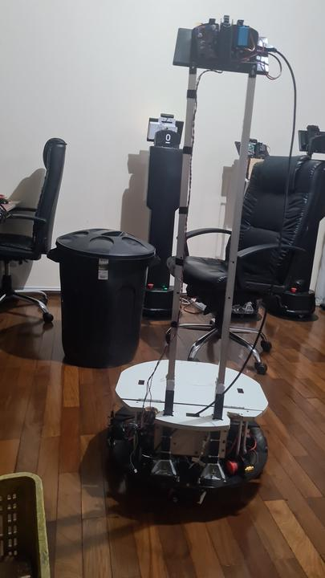

BLDC hub-motor drives and power management for a mobile service robot

For a differential-drive service robot I designed the two BLDC motor driver boards and the robot's power-management board, and wrote the real-time Field-Oriented Control firmware on STM32F4. I modeled the motor in Simulink and used the model to design the controller. Then I implemented it in C/C++ and tested it on the bench, first with the hub motors clamped on a fixture and under mechanical load on rollers, then in the robot.
- Motor drivers: three-phase power stage, gate drive, phase-current sensing and MCU on one board per motor. I prototyped the current-sense front end on a breadboard with a TI INA differential amplifier before committing it to the PCB.
- Power-management board: battery charging and consumption management, overcurrent and reverse-polarity protection, ideal-diode power path and the regulated rails for the robot's subsystems. Tested on a lead-acid battery and an electronic load.
- Bring-up and validation: hands-on assembly, debugging and signal-integrity checks with oscilloscope and logic analyzer.